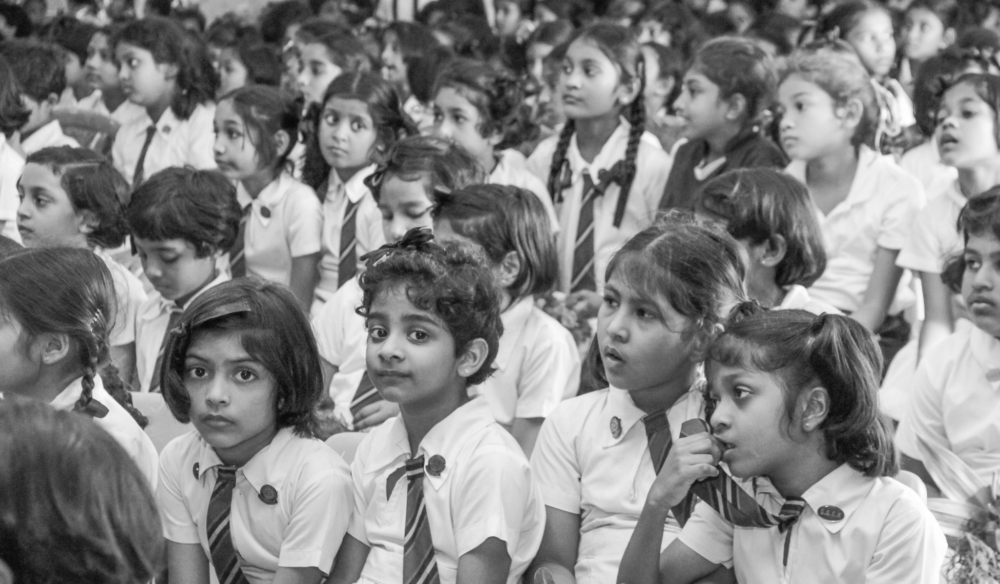
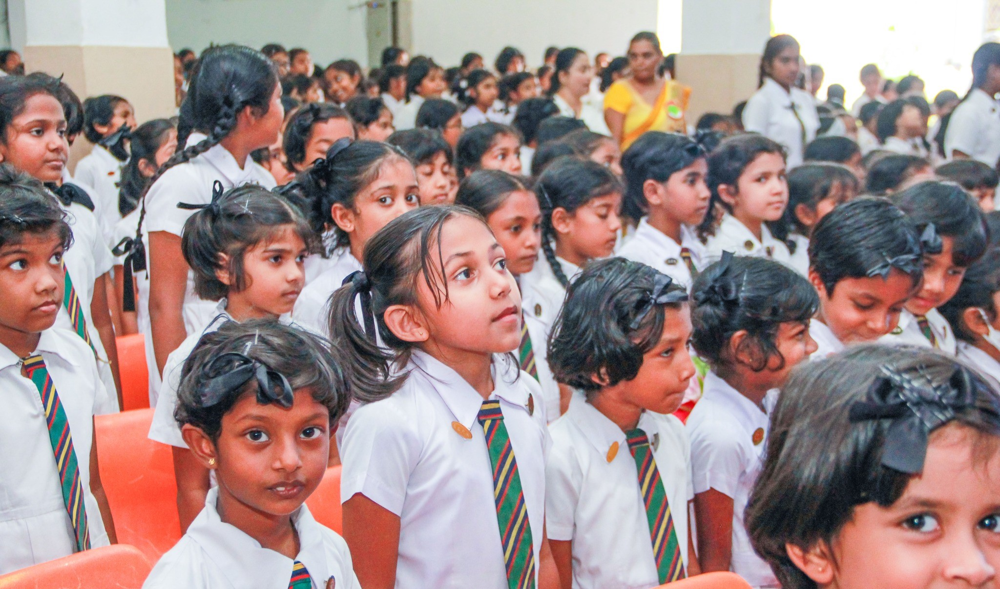
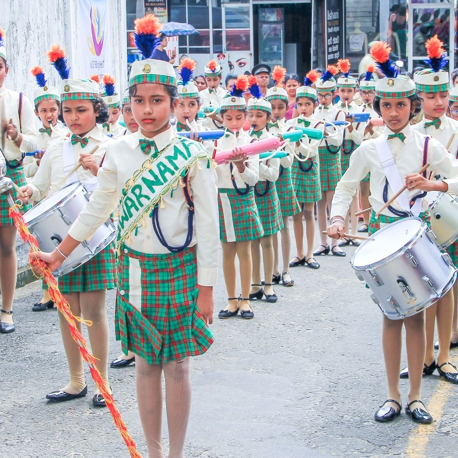
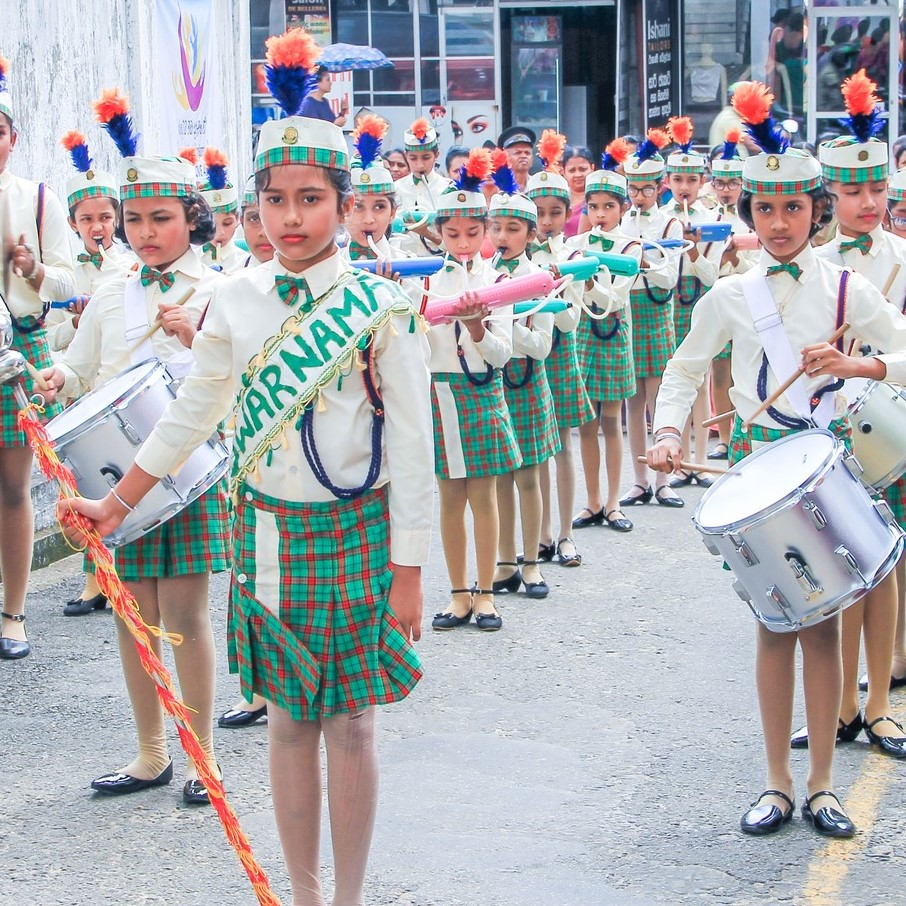
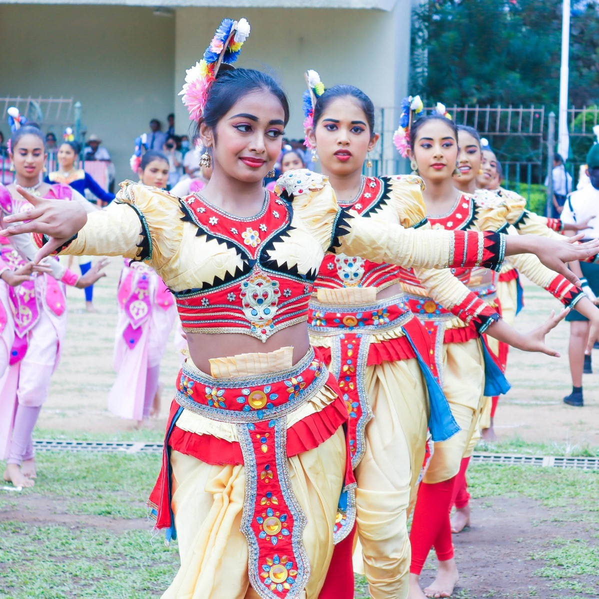
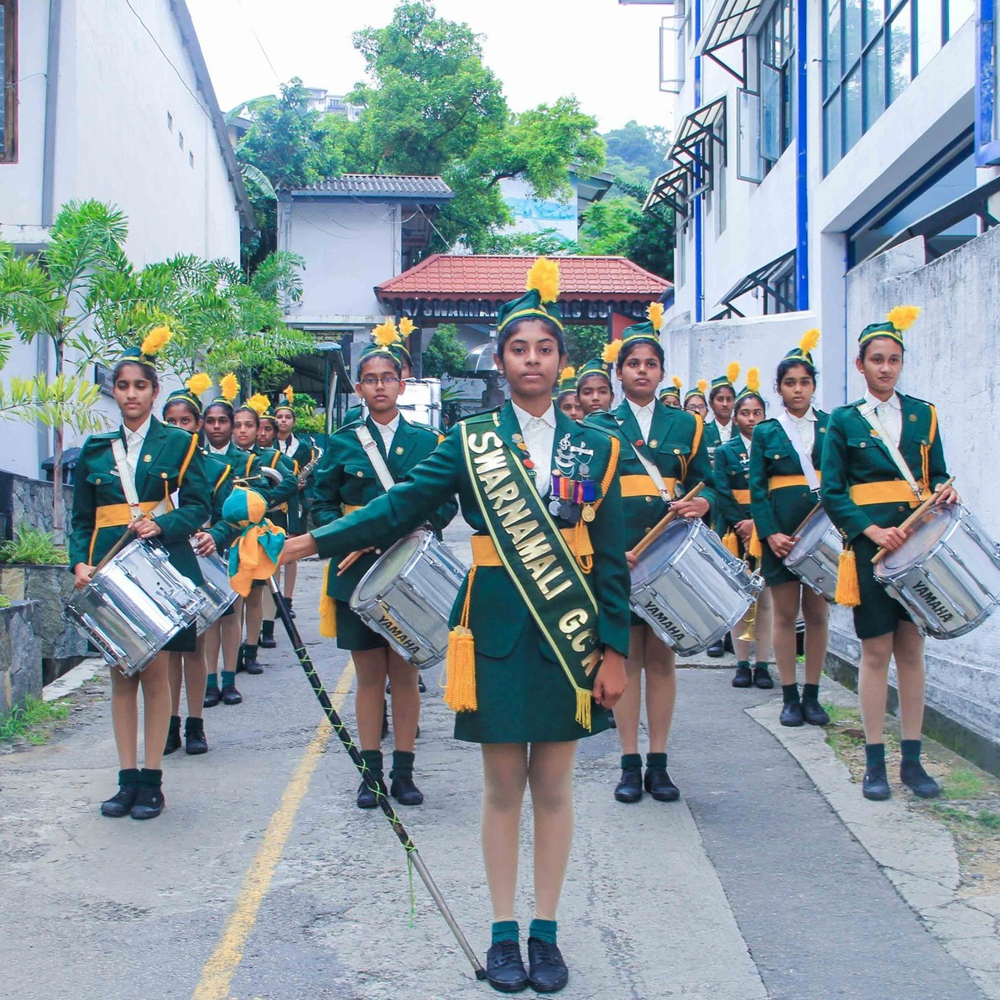
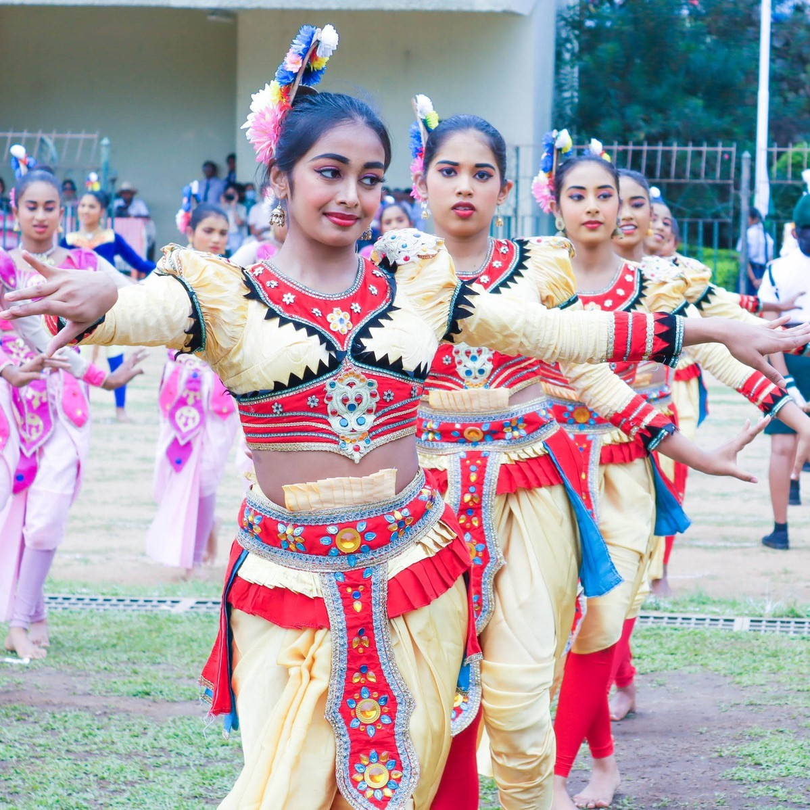
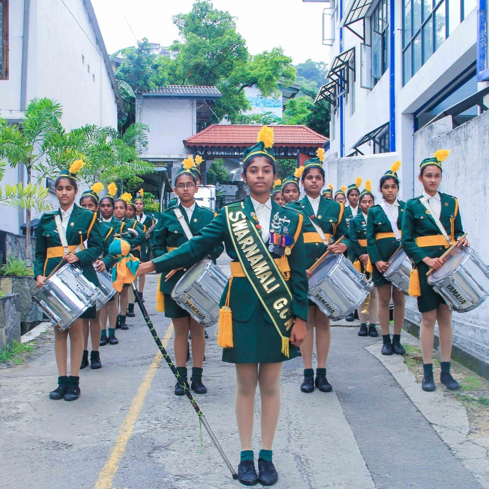

Established in 1928 as “Maha Nagarika Pasala” in Katukele with just 164 students, Swarnamali Girls' College has grown into a leading educational institution in Kandy. Over the decades, it has embraced cultural, academic, and sporting excellence—earning a proud reputation for nurturing empowered, talented young women.
Read More"Explore our treasured moments captured through the years. To view more photos, please visit our gallery "
 

 


